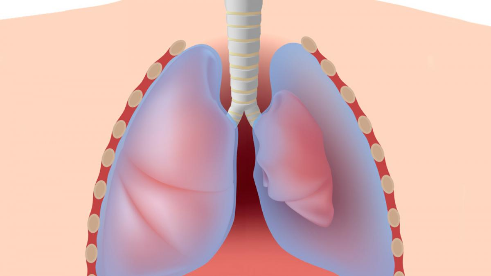
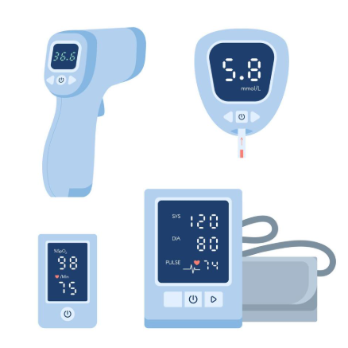

MediUA es una enciclopedia médica digital diseñada para ofrecer información clara, confiable y accesible sobre una amplia variedad de temas relacionados con la salud. Su objetivo principal es acercar el conocimiento médico tanto a profesionales como a estudiantes y público general, combinando rigor científico con un lenguaje comprensible.
El cáncer de piel es un tipo de cáncer que comienza como una proliferación de células en la piel. Las células pueden invadir y destruir los tejidos sanos del cuerpo. A veces, las células pueden desprenderse y diseminarse a otras partes del cuerpo. Seguir leyendo sobre el cáncer de piel
Neumotórax

Pulmón colapsado parcialmente
Un neumotórax es un colapso pulmonar. Un neumotórax se produce cuando el aire se filtra dentro del espacio que se encuentra entre los pulmones y la pared torácica. El aire hace presión en la parte externa del pulmón y causa el colapso. Un neumotórax puede ser un colapso pulmonar completo o un colapso de solo una parte del pulmón. Seguir leyendo sobre el neumotórax
Constantes vitales

Imagen que muestra varios aparatos médicos utilizados para medir constantes vitales: tensiómetro, termómetro, pulsioxímetro y glucómetro.